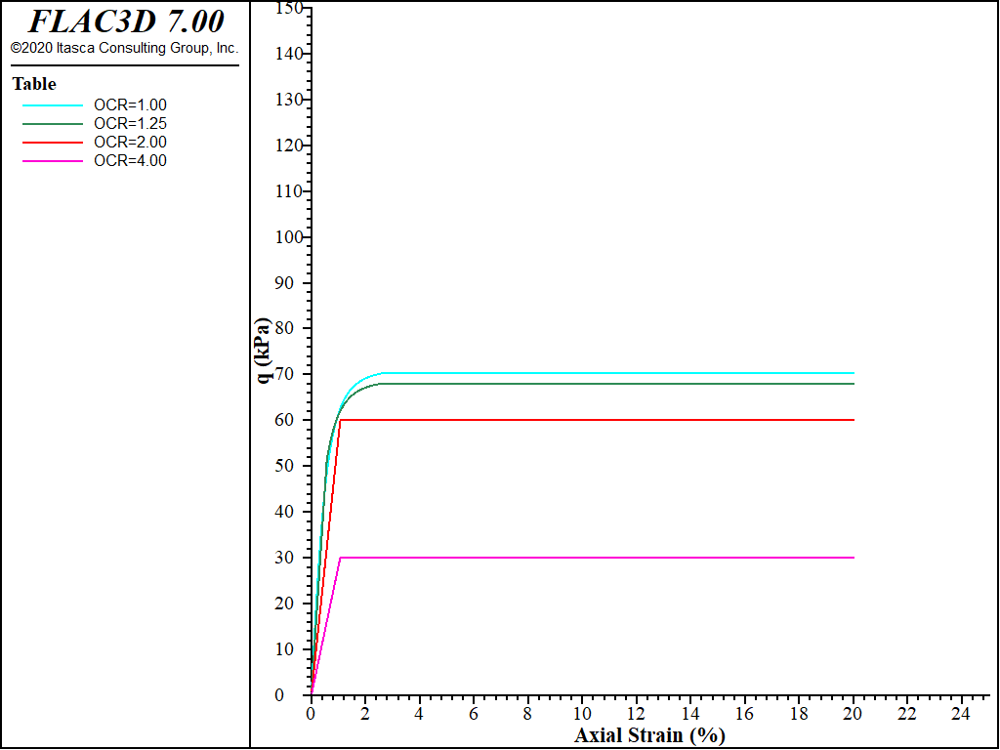
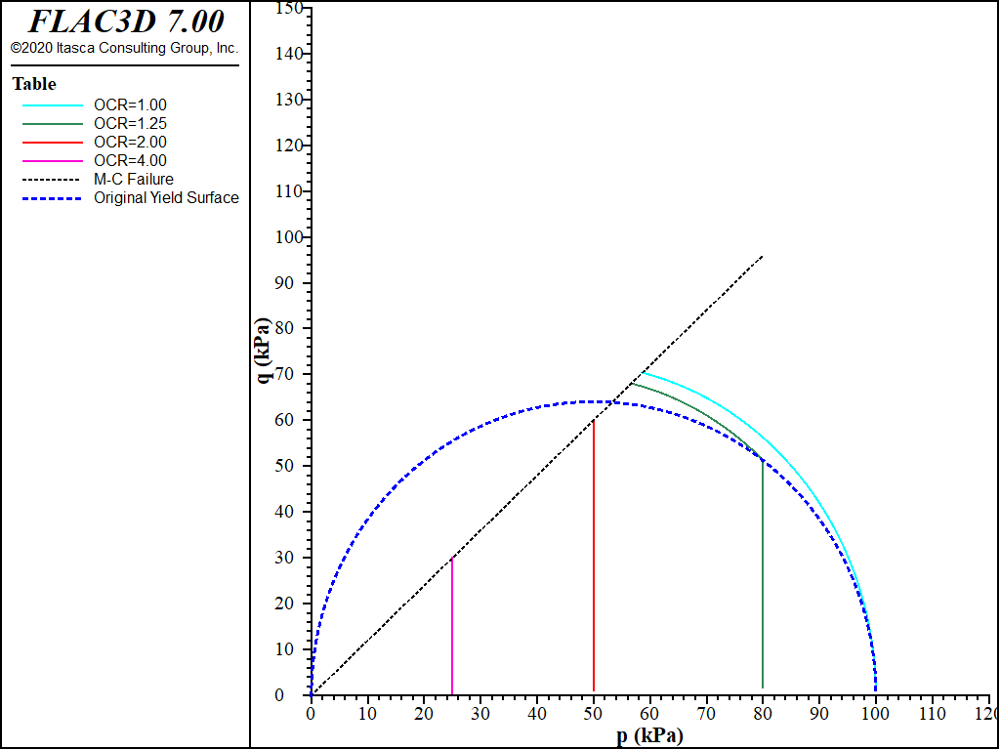

采用 Soft-Soil 模型的不排水三轴试验
注意
本示例的项目文件可在 FLAC3D 中查看/运行。[1] 该项目的主数据文件见本示例末尾。
Soft-Soil 模型（Soft-Soil model）用于模拟三轴固结不排水（CU）试验，固结应力分别为 100、80、50 和 25 kPa。假定四种情况的前期固结压力（帽盖压力）均为 100 kPa，分别对应 OCR = 1.00、1.25、2.00 和 4.00。三轴不排水压缩通过设置零体积应变实现，或将水平应变设为轴向应变的 -0.5 倍。轴向应变最高达 20%。输入参数汇总于下表：
| \(\lambda^*\) | 0.106 |
| \(\kappa^*\) | 0.016 |
| \(v\) | 0.25 |
| \(\phi\) | 30° |
| OCR | 1/1.25/2/4 |
图 1（Figure 1） 绘制了偏剪应力（q）与轴向应变的关系。4 种情况的偏应力均先增大然后保持恒定值。偏应力达到的饱和值是由于加载路径到达 Mohr-Coulomb 剪切破坏线，如图 5 所示，该图绘制了 q 与 p 的曲线。
从 图 2（Figure 2） 可以看出，对于 OCR = 1 的情况，不排水三轴加载后 p 立即下降，直到达到 Mohr-Coulomb 剪切破坏线，而 q 增大时帽盖在膨胀。对于 OCR = 1.25 的情况，p 保持恒定直到达到帽盖；随后 p 下降直到达到 Mohr-Coulomb 剪切破坏线。对于 OCR = 2 和 4 的情况，p 保持恒定，因为加载路径在到达帽盖之前就已达到 Mohr-Coulomb 剪切破坏线。对于后两种情况，较高的 OCR 值使不排水加载路径无法到达帽盖。


图 1：初始围压从 100 kPa（OCR=1.00）、80 kPa（OCR=1.25）、50 kPa（OCR=2.00）到 25 kPa（OCR=4.00）的三轴 CU 压缩试验的 q 与轴向应变关系。


图 2：初始围压从 100 kPa（OCR=1.00）、80 kPa（OCR=1.25）、50 kPa（OCR=2.00）到 25 kPa（OCR=4.00）的三轴 CU 压缩试验的 q 与 p 关系。
数据文件
model new
model large-strain off
;
[global cs0 = -100.0]
[global totalsteps = 10000]
[global rate = 0.2/totalsteps]
[global ocr = 1.00]
;
zone create brick size 1 1 1
zone face skin
zone cmodel assign soft-soil
zone property lambda-modified 0.106 kappa-modified 0.016 poisson 0.25
zone property coefficient-normally-consolidation 0.62 ...
over-consolidation-ratio [ocr]
zone property friction=30.0 cohesion 0 dilation 0
zone property stress-1-effective=[cs0] stress-2-effective=[cs0] ...
stress-3-effective=[cs0]
;
zone face apply velocity-x=0.0 range group 'west'
zone face apply velocity-y=0.0 range group 'south'
zone face apply velocity-z=0.0 range group 'bottom'
zone initialize stress xx [cs0] yy [cs0] zz [cs0]
;
[global zp = zone.head]
[global gp = gp.find(8)]
fish define q_
global q_ = zone.stress.xx(zp) - zone.stress.zz(zp)
global a_ = -gp.disp.z(gp)
global strain_ = zone.strain.shear.inc(zp)
global p_ = -(zone.stress.xx(zp) + zone.stress.yy(zp) + ...
zone.stress.zz(zp))/3.0
end
;
model history name 'steps' timestep
fish history name 'q' q_
fish history name 'a' a_
fish history name 'shearstrain' strain_
fish history name 'p' p_
;
zone face apply velocity-z [-rate] range group 'top'
zone face apply velocity-x [0.5*rate] range group 'east'
zone face apply velocity-y [0.5*rate] range group 'north'
;
model solve cycles [totalsteps]
;
history export 'q' vs 'a' table 'qa_ocr1p00'
history export 'q' vs 'p' table 'qp_ocr1p00'
table 'qa_ocr1p00' export 'qa_ocr1p00' truncate
table 'qp_ocr1p00' export 'qp_ocr1p00' truncate
;
model save 'triaxial_cu_ocr1p00_ss'
尾注
| [1] | 要在 FLAC3D 中查看该项目，请使用程序菜单。
⮡ FLAC |
⇐ Single Zone Loading-Unloading Test with MohrT Model | Undrained Triaxial Test with NorSand Model ⇒
| 这些内容对您有帮助吗？… | FLAC3D © 2019, Itasca | 原文更新于 2020 年 10 月 8 日 |